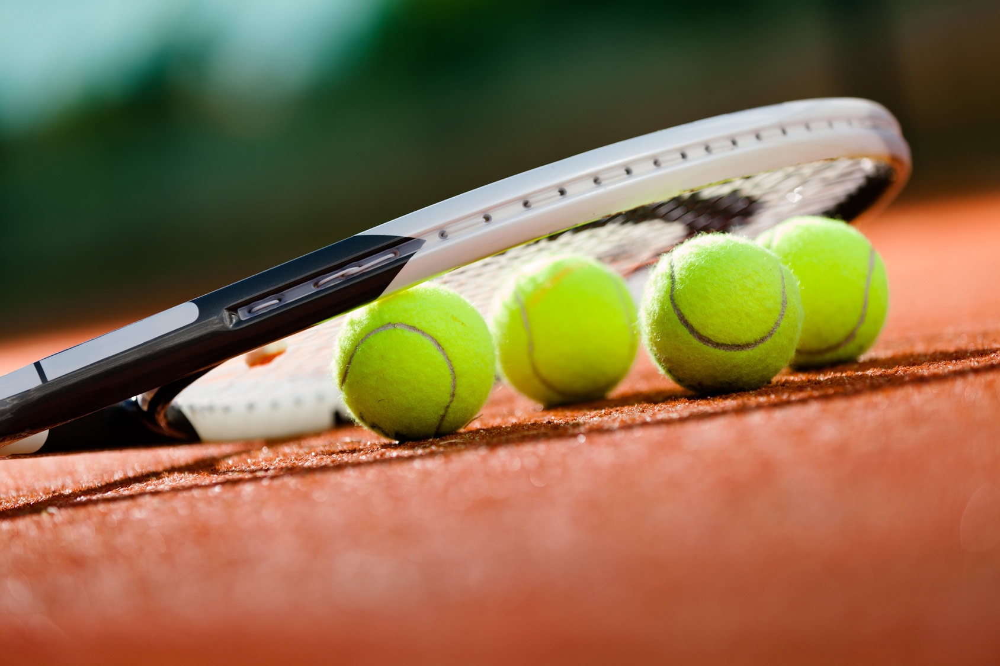

Tennis is a racket sport that can be played individually against a single opponent (singles) or between two teams of two players each (doubles). Each player uses a tennis racket that is strung with cord to strike a hollow rubber ball covered with felt over or around a net and into the opponent's court. The object of the game is to play the ball in such a way that the opponent is not able to play a valid return. The player who is unable to return the ball will not gain a point, while the opposite player will.
Tennis is an Olympic sport and is played at all levels of society and at all ages. The sport can be played by anyone who can hold a racket, including wheelchair users. The modern game of tennis originated in Birmingham, England, in the late 19th century as "lawn tennis". It had close connections both to various field ("lawn") games such as croquet and bowls as well as to the older racket sport of real tennis.

Tennis is an Olympic sport and is played at all levels of society and at all ages. The sport can be played by anyone who can hold a racket, including wheelchair users. The modern game of tennis originated in Birmingham, England, in the late 19th century as "lawn tennis". It had close connections both to various field ("lawn") games such as croquet and bowls as well as to the older racket sport of real tennis.
The rules of tennis have changed little since the 1890s. Two exceptions are that from 1908 to 1961 the server had to keep one foot on the ground at all times, and the adoption of the tiebreak in the 1970s. A recent addition to professional tennis has been the adoption of electronic review technology coupled with a point challenge system, which allows a player to contest the line call of a point, a system known as Hawk-Eye.Tennis is played by millions of recreational players and is also a popular worldwide spectator sport. The four Grand Slam tournaments (also referred to as the "Majors") are especially popular: the Australian Open played on hard courts, the French Open played on red clay courts, Wimbledon played on grass courts, and the US Open played also on hard courts.
Equipment
Part of the appeal of tennis stems from the simplicity of equipment required for play. Beginners need only a racket and balls.
Game
A game consists of a sequence of points played with the same player serving. A game is won by the first player to have won at least four points in total and at least two points more than the opponent. The running score of each game is described in a manner peculiar to tennis: scores from zero to three points are described as "love", "fifteen", "thirty", and "forty", respectively. If at least three points have been scored by each player, making the player's scores equal at forty apiece, the score is not called out as "forty-forty", but rather as "deuce". If at least three points have been scored by each side and a player has one more point than his opponent, the score of the game is "advantage" for the player in the lead. During informal games, "advantage" can also be called "ad in" or "van in" when the serving player is ahead, and "ad out" or "van out" when the receiving player is ahead.
The scoreboard of a match between Andy Roddick and Cyril Saulnier.
The score of a tennis game during play is always read with the serving player's score first. In tournament play, the chair umpire calls the point count (e.g., "fifteen-love") after each point. At the end of a game, the chair umpire also announces the winner of the game and the overall score.
Set
A set consists of a sequence of games played with service alternating between games, ending when the count of games won meets certain criteria. Typically, a player wins a set by winning at least six games and at least two games more than the opponent. If one player has won six games and the opponent five, an additional game is played. If the leading player wins that game, the player wins the set 7–5. If the trailing player wins the game, a tie-break is played. A tie-break, played under a separate set of rules, allows one player to win one more game and thus the set, to give a final set score of 7–6. A "love" set means that the loser of the set won zero games, colloquially termed a 'jam donut' in the USA.[48] In tournament play, the chair umpire announces the winner of the set and the overall score. The final score in sets is always read with the winning player's score first, e.g. "6–2, 4–6, 6–0, 7–5".
Match
A match consists of a sequence of sets. The outcome is determined through a best of three or five sets system. Recreational players may agree to play any number of sets, depending upon time availability or stamina. On the professional circuit, men play best-of-five-set matches at all four Grand Slam tournaments, Davis Cup, and the final of the Olympic Games and best-of-three-set matches at all other tournaments, while women play best-of-three-set matches at all tournaments. The first player to win two sets in a best-of-three, or three sets in a best-of-five, wins the match. Only in the final sets of matches at the Australian Open, the French Open, Wimbledon, the Olympic Games, Davis Cup (until 2015), and Fed Cup are tie-breaks not played. In these cases, sets are played indefinitely until one player has a two-game lead, leading to some remarkably long matches.
I like to talk about tennis because it is a sport that I practiced, because tennis is something that I went through, also because I participated in tournaments and when I won I felt very good with myself, that's the reason why is my favorite sport and topic.
You can see for more information at this websites: